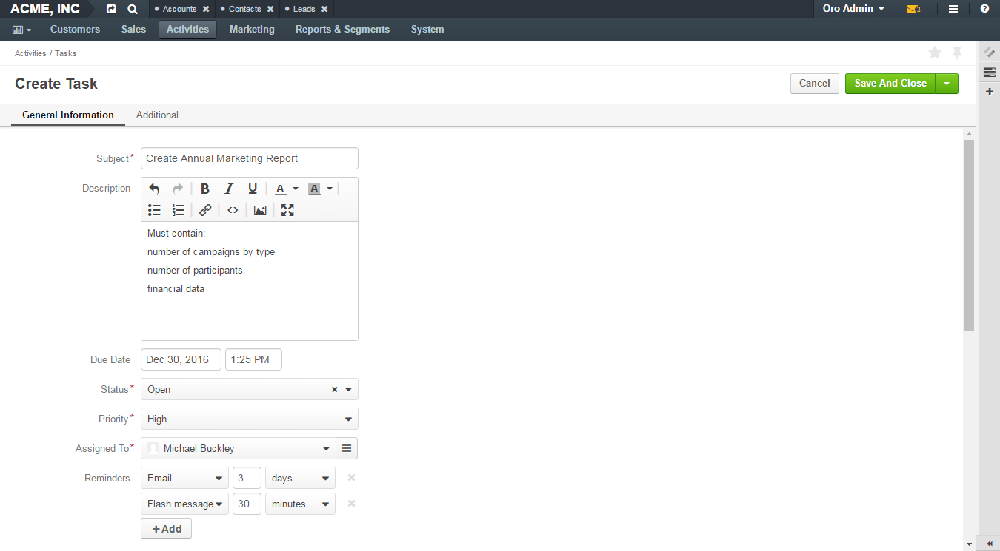
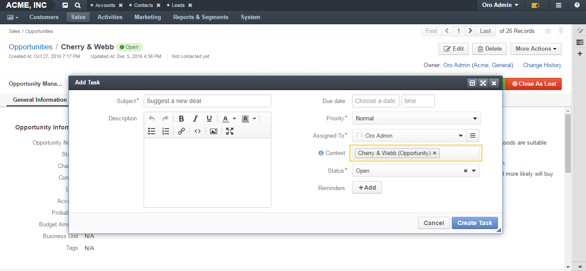

Tasks¶
What Is a Task?¶
Tasks are assignments that need to be accomplished by a user. Keeping track on tasks helps organize the work process and ensure that all the important work is done.
‘Create a regional sales report,’ ‘Compose an email to customer ABC,’ ‘Prepare everything required for marketing campaign A’—these are all examples of tasks that users can be assigned.
What You Can Do with Tasks?¶
With OroCRM and OroCommerce you can create, assign tasks, organize them by priority, set their due date and manage them through their life cycles.
Tasks can be created in 3 different ways.
1st Way
If you need to distribute work in your business unit and make sure that the work time of your employees is used efficiently, you can go to the user view page, check their current tasks in the corresponding section, and click the Assign Task action button to create and immediately assign a new task to this user.
2nd Way
The second way is the most convenient when the idea of the task appears when you work with the certain entity record. For example, you work with an opportunity record and decide to create a task related to it. Click the Add Task action button on the opportunity record view page to create a task.

When you add a task from an opportunity page, this opportunity is displayed as a context of the task being created.
Note
If you use the Add Task action button on a user view page, the user will not appear as a context for the task.
3rd Way
The third way of creating tasks is the most traditional: you have the whole system section devoted to tasks (by default you can find it by navigating to Activities>Tasks in the main menu) where you can create, assign and manage them according to your liking.

Users can see tasks assigned to them on the My Tasks page, in the calendars on the My Calendar page and Today’s Calendar widget, in the Tasks List sidebar widget, and in the Tasks section of their view pages.
If an entity record is marked as a context for a task, this task appears in the Activity section on the entity record view page.